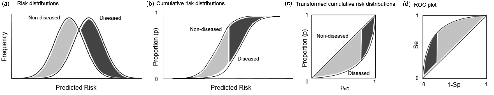
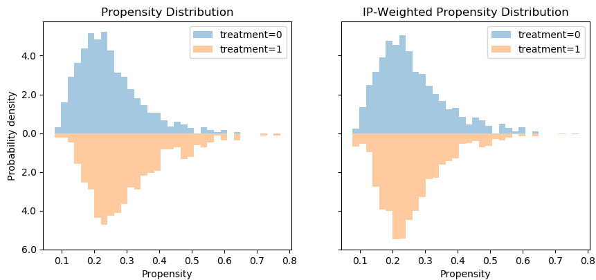

Using machine learning metrics to evaluate causal inference models
Reinterpreting known machine learning evaluations from a causal inference perspective, focusing on ROC curves for propensity models.
Originally published on
Background
The fundamental problem of causal inference
Evaluating causal inference models is literary impossible. Few scientific concepts are so pompously named — yet accurately describe the gravity of an issue — as the notorious “fundamental problem of causal inference”.
Briefly, the prediction task in causal inference is different than that of supervised machine learning (ML). While in ML we interpolate the target to new unseen samples, in causal inference we extrapolate the target from units in one group to units in the other group. Because in any given time a unit can only be in one group and not the other (e.g., you either have received a drug or you haven’t), we lack the ground-truth labels to compare against our predictions. Counterfactual outcome prediction cannot be derived like regular supervised prediction, nor can it be evaluated as one.
Causal models as meta-learners
Most causal inference algorithms usually have some machine learning core — a statistical model that predicts the outcome or treatment assignment. Once a mapping between features to targets is obtained, causal models can then have various ways to indirectly apply those statistical predictions to obtain a causal estimate.
For example, inverse probability weighting (IPW) is a causal model that estimates the causal effect by first modelling the treatment assignment. It takes any machine learning classifier that can also output a continuous score between 0 and 1 and assume it to model the probability of being treated: \(\hat{p}=\Pr[T|X]\). It regresses the binary treatment assignment (\(T\)) against the features (\(X\)), then takes the inverse of that predicted scores and use them to create a weighted average of the outcome.
Having this machine-learning backbone allows us to interrogate it using commonly known metrics from machine learning; and just like IPW adjusts a binary classifier to obtain a causal estimate, we can adjust these ML metrics to obtain a causal-inference-relevant view.
This post is a an effort to breakdown a larger manuscript into bite-size chunks, and will focus on what ROC curves can tell us about propensity models.
ROC curves recap
Classifications models can be evaluated for their calibration — how well they behave as probability models — and for their discrimination — how well they separate positive from negative examples. AUC is a metric for discrimination. A more in-depth overview is slightly out of scope for this article, but I do want you to keep in mind two ways for generating ROC curves from a list of prediction scores and labels.
First view is the naïve one. For each possible threshold we will calculate the true-positive and false-positive rates, plotting that point in ROC space. Note that the TPR and FPR can be affected by the weight each unit contributes to the classification, which is not necessarily 1.
Second view is more computationally efficient. It involves sorting the scores and traversing the list such that each positive unit moves you one step up and each negative unit moves you one step right. The size of the step is correspondingly determined by the fraction of positive and negative units, but we can weigh each unit so that the step size changes arbitrarily.

In our case, the prediction scores are the propensity estimations (probability to be in the treatment group) and the labels are the actual treatment assignment. Moreover, controlling the ROC space through sample-weighting is the basis for the additional ROC curves to be presented.
Classification metrics for propensity models — overfit, underfit, and positivity violations
Coming from machine learning, this can be somewhat counterintuitive, so let’s get done with it right out of the gate: good prediction performance usually suggests a bad propensity model and a bad causal model downstream. Propensity scores should not be able to discriminate well between the treatment and control units.
If you’re lucky, your good prediction performance is due to good-old overfit. You can use your ML knowledge to solve for that. Causal inference models are prone to all the same pitfalls in statistics, they are simply blessed with a few additional ones.
If you’re not lucky, your good discrimination ability may hint you have a positivity violation in your data. Positivity is an essential assumption if wanting to extrapolate outcomes across treatment groups, as in causal inference. It states that the treated should have some chance (i.e. positive probability) to be in the control group and vice versa. In other words, the groups should have some common support — in each subspace of features we should have both treated and control units, so both groups have their covariates overlap. Otherwise, how could you generalize the predicted outcome from the treated to the control if all treated units are males and all control units are females? Perfect discrimination between treated and controls suggests the groups occupy mutually exclusive regions in feature-space violating a necessary assumption for causal inference.
Conversely, bad discrimination performance is not necessarily bad. It might simply suggest the treatment groups are well mixed — an encouraging step towards the validity of a causal analysis. However, it might also be due to underfit. The response surface of treatment assignment might be a complex one to model. Therefore, you should experiment in iteratively increase the expressiveness of your model to the point you overfit just to verify it is indeed the data that is balanced and not the model that is under-specified.
Solving for lack of overlap is possible, but out of scope for this post. Just to namedrop a few strategies: you should revise the inclusion criteria of your data, rethink your confounder selection, stratify your analysis on highly predictive features, or use domain knowledge to thoughtfully help you extrapolate through mechanism rather than data.
ROC curves for propensity models
Focusing on propensity-based causal models, we have three relevant ROC curves: the regular one based on propensity scores and two novel curves created by reweighting the scores. They all work in tandem, and I’ll present each one: how to obtain them and how to interpret them.
Vanilla ROC curve
How: This is the regular ROC curve simply obtained by taking the propensity scores against the binary treatment assignment.
roc_auc_score(t, p_hat)Interpretation: We already discussed the issue that the AUC should not be too high as it suggests good discrimination, which is bad for causal inference. The ROC curve allows us to detect such regions of perfect discrimination. Ideally, there should not be long vertical or horizontal segments in the curve. A sharp long vertical contour suggests there’s a bunch of data points for which we only get true positives (upward movement) without paying any false negatives (rightward movement). That is, the treated units are very separable from the untreated — they are not well-mixed. Reiterating the above: this can hint that we have a positivity violation in the feature subspace that is mapped into this region of scores (thresholds) causing the vertical line.
IP-weighted ROC curve
How: in this curve we weight the contribution of each unit’s propensity score to the ROC curve by the corresponding inverse-probability weight of that unit.
ip_weights = (t / p_hat) + ((1 - t)) / ((1 - p_hat))
roc_auc_score(t, p_hat, sample_weight=ip_weights)Interpretation: Ideally, like every post-weight discrimination metric, we should expect a random-like performance. Namely, a ROC curve that aligns with the diagonal and an AUC around 0.5.
Intuition: This curve shows how well the weights balance the groups. IPW creates a pseudo-population in which the treated and control have similar characteristics — it weighs the sample so that in each region in the feature-space we should have similar amount of (weighted) units. If we were to apply a classifier in this weighted population, it would be difficult to discriminate the treated from the controls. For example, if we have the same amount of males and females we can’t use sex as a predictive feature, and if we have the same amount of young and adults we can’t use age, etc. Therefore, poor discrimination post-weighting is welcomed.
Expected ROC curve
How: We obtain this curve by weighing the scores such that each unit contributes its propensity score to the positive label (treatment group) and its complementary score (1 minus propensity) to the negative label (control group)
weights = concatenate([p_hat, 1 - p_hat])
t = concatenate([ones_like(p_hat), zeros_like(p_hat)])
p_hat = concatenate([p_hat, p_hat])
roc_auc_score(t, p_hat, sample_weight=weights)Interpretation: Ideally, we would want the expected propensity to align with the vanilla (unweighted) propensity curve (and have same AUC).
Intuition: The propensity-to-be-treated is never observed, we only see one instantiation of it in the form of treatment assignment. However, we can model the average propensity of units with similar features. If we assume the statistical model represents the true propensity, then we move from a binary classification task to a smoother calibration-like task where units with high confidence (extreme propensity) contribute almost like they would in the vanilla ROC curve, and low-confidence units (propensity around 0.5) contribute a segment parallel to the diagonal.
Connection to propensity distribution plots
Traditionally, practitioners will plot the propensity distribution, colored by the treatment and control groups, and look for overlap. ROC curves are another view of that propensity distribution.
There is a direct transformation from scores distribution to ROC curves, as seen in the figure below taken from Janssens and Martens.

And the gif below from Dariya Sydykova show how separability of scores affect how sharp the curves are.

Following this perspective, the propensity histogram weighted by the inverse propensity serves the same purpose. The bar heights are no longer determined by the number of individuals in each bin, but by their accumulated weights. In the weighted scheme (right), the bars corresponding to the same propensity bucket (i.e. x-axis bin) have the same height in the treatment and control groups, relative to the unweighted version (left) in which the heights of the same bins differ.

However, I would argue that viewing this in ROC space provides an easier interpretation, since we can convert the fuzzy notion of “distribution overlap” to a concrete AUC score.
Summary
We have seen how to interpret pre-weighting classification metrics (good performance is bad) and post-weighting classification metrics (bad performance is good).
I focused on ROC curves for propensity models, presented two novel curves and discussed how to interpret them.
Here are three take-aways for three curves:
Regular ROC curves should not have sharp, long vertical segments.
Inverse-probability weighted AUC should be around 0.5.
Expected AUC should be close to the regular AUC.
These presents an off-the-shelf intuitive measure to verify a causal model is not omitting complete nonsense. Using such simple AUC-based criteria can be implemented to automatically select causal inference models that perform better than others through cross-validation, similar to how we apply model selection in machine learning.
I believe that deploying a propensity model and examining its behavior is beneficial in any causal inference analysis. Even if you end up modeling the response surface directly without using the propensity scores, it can still provide meaningful insights into the structure of the data and the assumption needed for a valid causal conclusion.
For additional thoughts and evaluations, see our preprint: https://arxiv.org/abs/1906.00442.